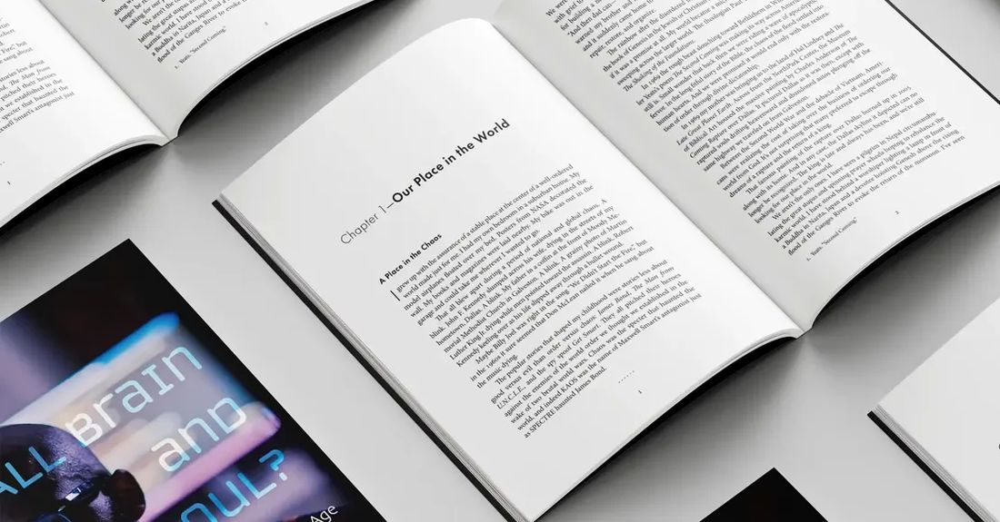

The book
All Brain and No Soul?
Real Humanity in an AI Age
Artificial intelligence forces us to reconsider what it means to be human. Dr. Hunt traces that question through the Copernican and Darwinian revolutions to the arrival of generative AI. Rather than treating AI as the end of humanity, he argues that our real challenge is to rekindle our humanity through community, imagination and spiritual connection.
Use code CONF40 for 40% off at Wipf and Stock.
- Author
- Robert A. Hunt
- Publisher
- Wipf and Stock Publishers
- Published
- February 24, 2025
- Pages
- 214
- Formats
- Hardcover, paperback, Kindle, audiobook (8 hours, read by the author)
- ISBN
- 9798385235223
Contents
Six chapters
- Our Place in the World
- The Screen Age
- Calculators to Computers to AI
- How It Works
- Limits of Generative AI
- Children of the AI Age

[The book] calls for our churches and homes to become centers of humanization—sanctuaries where we nurture the essence of our humanity in an AI age.
[It] offers a nuanced and comprehensive overview of generative AI.
The way to enrich our humanity is by being human with humans, even if that process is emotionally demanding and the demand comes from someone half our age.
Questions
About the book
Who is All Brain and No Soul? written for?
It is written for thoughtful general readers, especially people of faith, who want to understand AI without hype or fear. You do not need a technical background. Dr. Hunt explains how large language models work and where they fall short, then places AI in a longer story that runs from Copernicus and Darwin to today's chatbots and brain-computer interfaces.
Can a church class or book group use it?
Yes. Church classes, book groups and university courses use it to ask what makes us human when machines can talk like us. The six chapters work well as a six-week series. Dr. Hunt has taught classes on the book at Highland Park, University Park, Lovers Lane and Lake Highlands UMC, among others, and can visit or join your group by video. Get in touch to arrange it.
What formats is it available in?
Hardcover, paperback, Kindle, and an 8-hour audiobook read by the author. The book is 214 pages, published by Wipf and Stock in 2025.
Where can I buy it?
Order directly from Wipf and Stock with code CONF40 for 40% off, or from Amazon. A free preview is available on Google Books.
Is the book against AI?
No. It treats AI as a powerful technology with real limits. The book argues that the real challenge is not AI replacing us but whether we keep practicing the things that make us human: community, imagination and spiritual connection.